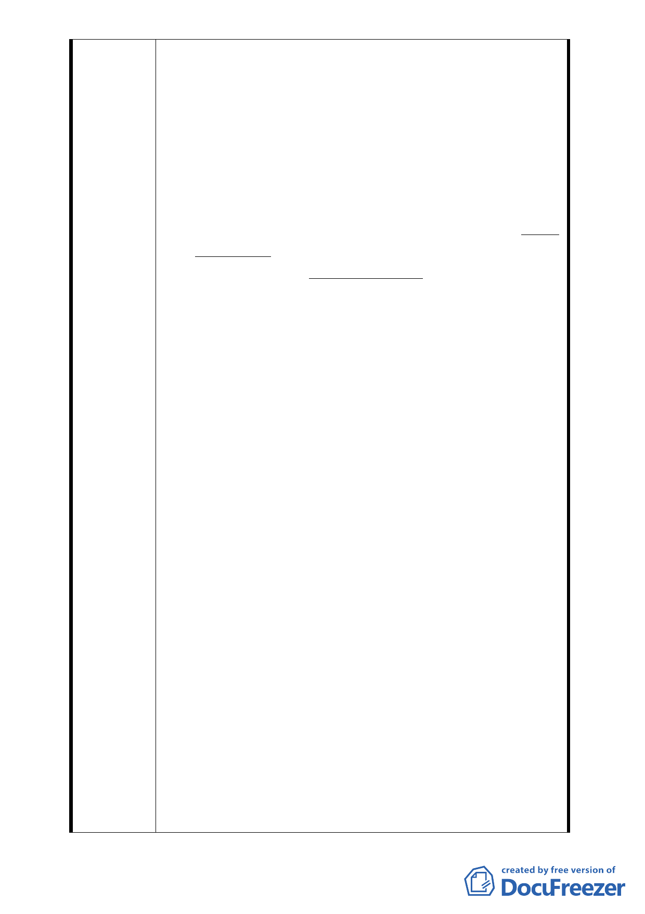

(八)合康公司於「台北市都市設計及土地使用開發許可審議
委員會」之審議前，曾同意之地主紛紛撤回同意書，該
公司為求超過法定比例，遂以各種手段草率答應地主之
條件，竟以些微差距僥倖過關，但不同意之地主仍高達
約五分之二，其如何執行本都更案更令人憂心。該公司
並於本年6月間出版「都更說明Q&A問答」，其中第4頁竟
誇稱該公司屬「寶佳機構」集團，且係「合康建設股份
有限公司」之子公司，乃係跨足都更而成立。 惟陳情人
於經濟部商業司查出「合康建設股份有限公司」於 91 年
5 月 15 日經核准設立；反之，「合康工程顧問股份有
限公司」早就在 87 年 1 月 9 日即經台北市政府核准
設立，該二公司唯一相同者，僅是合康公司代表人周肇
欣之配偶陳秀嬪同時擔任該二公司之董事而已，合康公
司以此詐術誤導地主出具同意書，並藉此誇大其財力，
誘使地主出具同意書，其相關人員即涉嫌觸犯刑法第
339 條第 2 項之詐欺罪，即應移送法辨，台北市政府豈
容同意其擔任實施者並同意其出具之事業計畫？
五、都市更新條例是可怕的法律，同意者擔心簽下同意書搬
遷後，遲遲無法動工(如忠孝東路正義國宅案、松山路
都更案)，更擔心是否能如期完工；不同意者將喪失其
棲身之所，淪落至強制權利變換，被強迫領取現金補償
或遭提存之地步，更何況其委託專業估價業者查估之金
額並非比照同意參加都更者所獲得之建物及坐落土地
之市價，而是都更計畫確定時之價值，遑論有些實施者
利用計畫及現金補償皆未確定之假象，降低補償金額之
情事。
六、陳情人為地主之一，屬於不同意參加本都更案都更之住
戶，更因認為都市更新條例對「實施者」之資格及其財
力、經驗並未有積極之規定，市民對這部法律亦不熟
悉，一不小心即成為取得實施者之俎上肉。
七、本件「臺北市中正區中正段二小段 48 地號等 37 筆土地
都市更新事業計畫案」之實施者合康公司顯非適格，期
望貴府及臺北市都市更新及爭議處理審議會審議時，應
嚴加審核 (按中國建築經理股份有限公司為本都更案之
建經公司，其陳美珍總經理亦為審議委員會委員，當應
知所迴避)，切勿同意其擔任實施者並同意其出具之事業
- 33 -